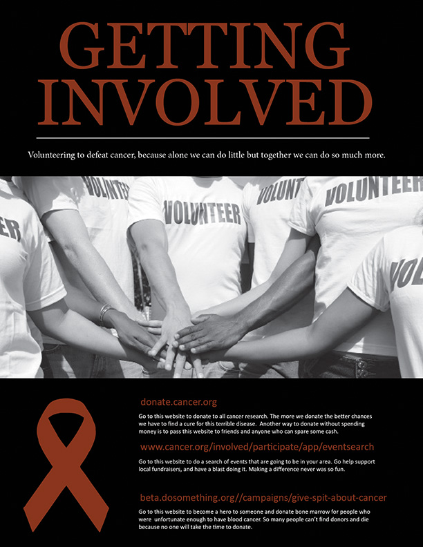
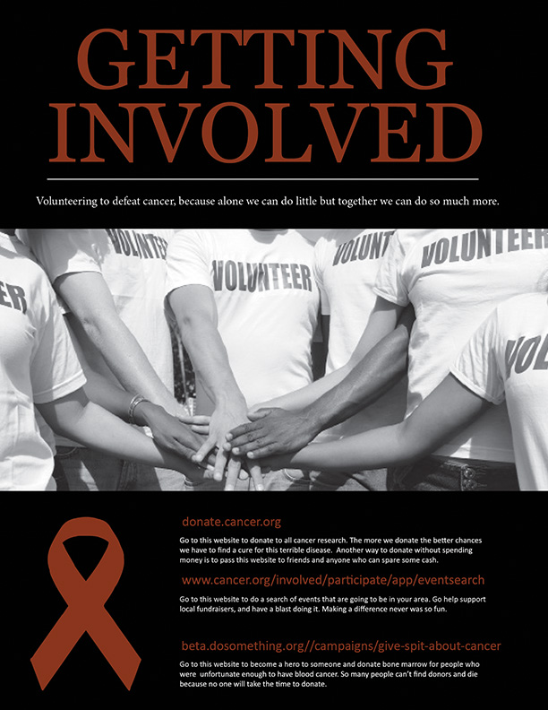

This cancer magazine infographic was created to inform people about cancer. I used black and red contrast to be eye catching. The front image is of a cancerous cell. I broke the magazine down into seven sections: what is cancer, cancer causes, cancer in children, cancer in women, cancer in men, surviver stories, and getting involved.
I chose to do an informational magazine infographic about cancer because recently my grandmother passed away from cancer. It seems like cancer touches everyone lately. I wanted people to be interested in learning about what it is, and how to prevent it. I wanted it to be friendly enough to make big scary cancer not so ominous.
*Hover over the cancer magazine cover and scroll down to go through all the pages.